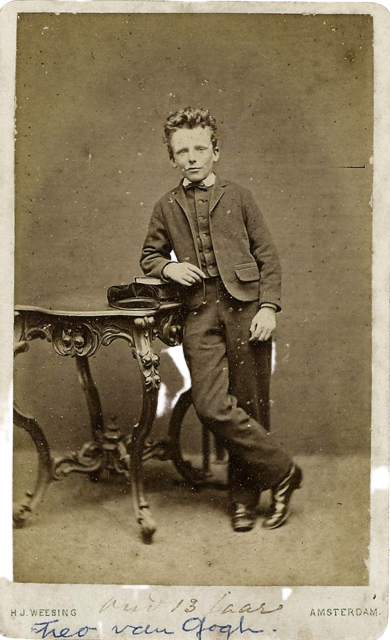

La oreja estrellada
Vincent Willem van Gogh
Vincent Van Gogh nació el 30 de marzo de 1853 en Groot-Zundert de Holanda y fue un pequeño inquieto, emocional con marcadas aptitudes hacia el dibujo. Pronto comenzó a trabajar en una galería de arte familiar donde creció su amor por la pintura. Años después, encerrado en la religión, se convirtió en pastor protestante y se trasladó a una región minera de Bélgica como misionero, donde comenzó a dibujar a la gente local. Aprovechando su estancia en Bélgica, se inscribió en la Academia de Bellas Artes de Bruselas en 1880, donde estudió dibujo y perspectiva. Pero no comenzará a sorprender con sus creaciones hasta que se traslada a Arlés (sur de Francia) en 1888, donde descubre la luz del Mediterráneo y los colores. La figura imprescindible en su vida fue su hermano menor Theo, marchante de arte, quien le prestó apoyo financiero y moral de manera continuada y desinteresada. La gran amistad que les unió está documentada en las numerosas cartas que se intercambiaron durante su vida.
¿Sabias qué?

1. Van Gogh llegó a pintar cerca de 900 obras en una década.
2. En sus inicios pintaba a modelos que posaban para él, pero por problemas económicos tuvo que continuar su carrera haciendo autorretratos y dibujando paisajes.
3. A pesar de su prolífica obra, Van Gogh solo consiguió vender uno de sus cuadros en vida y su fama únicamente empezó a crecer una vez muerto.
4. Realizó su primera pintura a los 27 años, una edad un tanto tardía en comparación a otros grandes genios de la Historia.
5. Sus padres le pusieron el nombre de Vincent en honor a su hermano, que nació muerto un año antes que él.
6. Su obra más reconocida, «La Noche Estrellada», la pintó estando en un asilo para personas con problemas mentales, situado en Saint-Rémy-de-Provence (Francia).
7. Cómo perdió su oreja sigue siendo un misterio sin resolver, pero la principal hipótesis apunta a que él mismo se la cortó accidentalmente durante una pelea con su amigo Paul Gauguin.
8. Van Gogh murió por una bala en la cabeza a los 37 años, no se sabe si por un suicidio u homicidio involuntario.
9. En sus obras, el pintor solía representar el complejo concepto matemático de la turbulencia, todavía sin resolver.
10. Vincent Van Gogh sufría epilepsia del lóbulo temporal, una enfermedad neurológica crónica que le causaba convulsiones.

Tributos
Van Gogh, a las puertas de la eternidad
(2018)
Ver Trailer

Loving Vincent
(2017)
Ver Trailer

El loco del pelo rojo
(1956)
Ver Trailer

Beyond Van Gogh
(Actual)
Ver Trailer
Galería